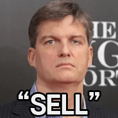

목요일 친절한 경제 한지연 기자 나와 있습니다. 한 기자, 이번 달 들어서 금 ETF가 잘 팔린다고요.
지난달 중순에 금현물 ETF 300억 원을 팔았던 개미들이 하순부터는 다시 순매수에 나섰습니다.
돌반지 하나 사기도 겁나던 금값, 많이 떨어졌다는 얘기 요즘 자주 들으시죠.
지난해 초 53만 원 하던 금 한 돈 3.75g이 1년 새 2배 가까이 뛰어서 올 1월에는 100만 원을 넘었는데요.
어제(4일)는 74만 7천 원까지 내려왔습니다.
국제 금값도 1월 말 정점보다 30% 넘게 빠졌고, 지난달은 2008년 금융위기 이후 가장 나쁜 10월이었습니다.
미국 금리가 더 오를 수 있다는 얘기에 이자 없는 금이 힘을 못 쓴 거죠.
그런데 이 와중에 개미들이 움직였습니다.
금현물 ETF, 그러니까 금 시세를 그대로 따라가면서 주식처럼 사고파는 금 펀드인데요.
지난달 첫 주엔 ACE와 TIGER 금현물 ETF를 120억 원 넘게 샀다가, 중순엔 확 팔았었거든요.
그러다 다시 '사자'로 돌아서서, 지난달 수익률이 마이너스 6%대였는데도 이달 들어 이틀 새 30억 원 가까이 담았습니다.
반면 해외 헤지펀드는 9주 연속 금 매수 포지션을 줄였는데, 개미는 거꾸로 가고 있는 겁니다.
실물 금도 잘 나갑니다.
5대 은행 골드바가 9월 한 달에만 291억 원 어치 팔렸는데, 평소 한 달 판매액의 3배가 넘었습니다.
내려갈 만큼 내려갔다는 인식에 중앙은행 같은 큰 손들이 계속 사들이는 것도 영향을 미친 것으로 보입니다.
떨어질 때 사라, 이런 말 많이 들어보셨죠.
싸졌을 때 '줍줍' 하자는 건데요.
개미만 그런 게 아닙니다.
나라 곳간을 지키는 중앙은행들, 얼마나 사냐면요.
골드만삭스 분석으론 최근 석 달 동안 한 달 평균 91톤씩, 2022년 이전보다 5배 넘게 사들였습니다.
외환 보유액을 달러에만 몰아두지 않으려는 움직임으로 보입니다.
중국은 금값이 출렁이는 와중에도 지난 9월까지 23개월 연속 금을 사들였고요.
우리 한국은행도 실물 금은 아니지만, 1분기엔 없던 미국 증시의 금 ETF를 새로 담은 게 확인됐습니다.
전 세계로 넓혀 보면 3분기에 금 ETF로 310억 달러가 들어와서 분기 기준 사상 최대였는데요.
금값이 떨어져도 길게 보고 사는 수요는 이어지고 있다는 분석입니다.
스위스 최대은행 UBS도 4천 달러 안팎이면 금을 더 담을 기회라고 봤고, 골드만삭스는 내년 말 전망치를 온스 당 5천400달러로 그대로 두고 있습니다.
다만 당분간은 더 출렁일 수 있다는 경고도 함께 나오는데요.
또 실물 금이라면 이것도 챙기셔야 합니다.
살 때 값과 팔 때 값이 어제만 해도 한 돈에 11만 1천 원이나 차이가 났거든요.
올 초 비쌀 때 산 한 돈, 어제 팔았다면 36만 원 넘게 덜 받는 셈입니다.
마지막은 벤츠가 뭘 잘못했나 보죠.
벤츠 코리아가 배터리 제조사를 제대로 알리지 않아서 아는 것에 따라서 차주 한 명당 400만 원을 배상하라는 조정 결정이 나왔습니다.
차 살 때 이 딜러 설명 다들 믿고 사시잖아요.
한국소비자원 소비자분쟁조정위원회 결정인데요.
대상은 EQE, EQS 5개 차종을 산 142명입니다.
이 차들 가운데 일부엔 중국 파라시스 배터리가 들어갔는데, 벤츠코리아가 딜러사에 나눠준 판매 지침엔 이게 빠져 있었고, 역시 중국 업체인 CATL 배터리만 들어간 것처럼 적혀 있었습니다.
직원 교육까지 해서 영업에 썼다는 거죠.
그러니까 중국산이라서가 아니라, 어떤 배터리인지 제대로 안 알린 게 문제라는 겁니다.
배터리는 성능도, 안전도, 차값까지 영향을 주는 핵심 부품이죠.
두 회사는 점유율이나 인지도에서도 차이가 있고요.
특히 2024년 인천 청라 아파트 주차장 화재, 기억하시죠.
그 뒤로 파라시스 배터리에 안 좋은 인식이 퍼져서, 중고로 팔 때 제값을 못 받을 수 있는 점도 배상액에 반영됐습니다.
공정위도 지난 3월, 벤츠코리아와 독일 본사에 과징금 112억 원을 매기고 검찰에 고발했습니다.
이제 공은 벤츠로 넘어갔습니다.
결정서를 받은 양쪽이 15일 안에 거부하지 않으면 조정이 성립하는데요.
그러면 조정을 신청하지 않은 차주도 같은 보상을 받을 수 있도록 절차가 진행됩니다.
해당 차주라면, 벤츠의 답을 지켜보셔야겠습니다.
댓글
수집 당시 댓글 49개
땨뗘(봇) · 11.05 21:10:03
피고인 · 11.05 21:10:55
ㅇㅇ · 11.05 21:11:21
ㅇㅇ · 11.05 21:12:14
· 엘레오놀 · 11.05 22:14:34
· ㅇㅇ · 11.06 04:23:07
ㅇㅇ · 11.05 21:12:26
ㅇㅇ · 11.05 21:13:00

ㅇㅇ · 11.05 21:13:26
ㅇㅇ · 11.05 21:13:37
ㅇㅇ · 11.05 21:13:44
ㅇㅇ · 11.05 21:15:30
· ㅇㅇ · 11.05 22:05:09
· ㅇㅇ · 11.05 22:25:22
· ㅇㅇ · 11.06 00:13:48
원또 · 11.05 21:16:52
ㅇㅇ · 11.05 21:21:39
ㅇㅇ · 11.05 21:24:06
ㅇㅇ · 11.05 21:27:59
ㅇㅇ · 11.05 21:29:02
· ㅇㅇ · 11.05 21:29:43
ㅇㅇ · 11.05 21:34:09
· 엘레오놀 · 11.05 22:12:52
· ㅇㅇ · 11.05 22:42:37
ㅇㅇ · 11.05 21:35:31
ㅇㅇ · 11.05 21:38:45
ㅇㅇ · 11.05 21:48:35
ㅇㅇ · 11.05 21:48:37
ㅇㅇ · 11.05 21:54:52
ㅇㅇ · 11.05 21:55:35
ㅇㅇ · 11.05 22:03:32
ㅇㅇ · 11.05 22:10:47
· ㅇㅇ · 11.06 04:27:47
ㅇㅇ · 11.05 22:16:54
ㅇㅇ · 11.05 22:18:36
ㅇㅇ · 11.05 22:39:11
ㅇㅇ · 11.05 23:06:49
· ㅇㅇ · 11.05 23:37:25
ㅇㅇ · 11.05 23:09:16
클레이모어2026 · 11.05 23:20:59
S＆P500 · 11.05 23:22:24
ㅇㅇ · 11.05 23:37:07
ㅇㅇ · 11.05 23:44:15
환란 전 교회 휴거 · 11.06 00:09:11
ㅇㅇ · 11.06 02:10:11
ㅇㅇ · 11.06 02:21:28
ㅇㅇ · 11.06 03:12:32
dd · 11.06 11:40:54
JungNu · 11.06 20:44:10